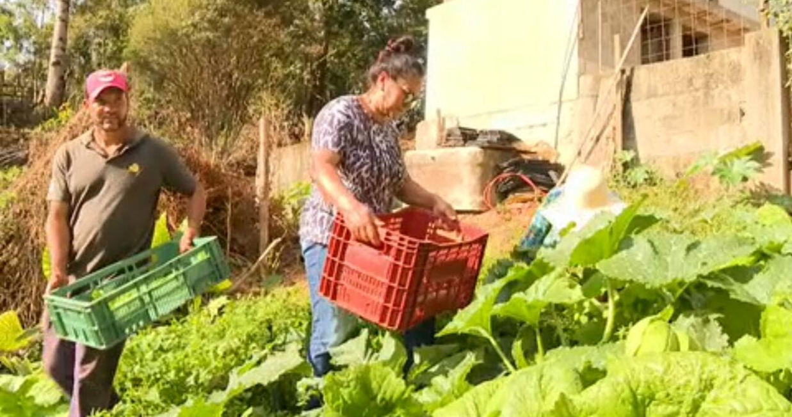

Notícias exclusivas da CN!
Produtores do campo passam dificuldade ao ter controle de pragas em verduras:
As pragas agrícolas são um dos maiores desafios para os produtores rurais, causando perdas significativas na produtividade e na qualidade das safras.
O não controle de pragas pode resultar em médias de produtividade que variam de 9,5% a 40% dependendo da praga e da cultura.
Os prejuízos que os agricultores vêm tendo com essa praga já estão na casa dos bilhões de reais. Como essa praga entrou no nosso país, ainda não se sabe, e dificilmente teremos respostas. Para piorar, os agricultores estão com dificuldade de controlar a lagarta apenas com os inseticidas disponíveis no mercado.
Saiba mais